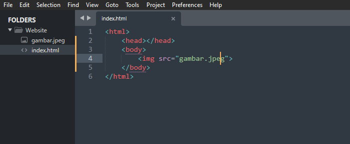
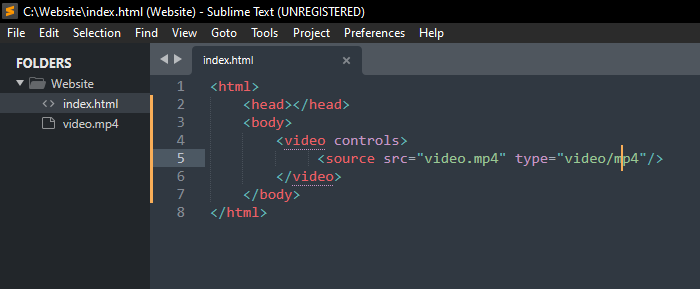
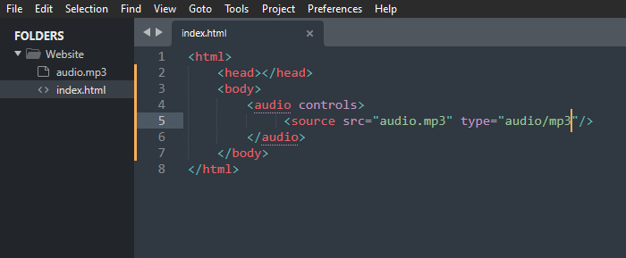

Tutorial Menaruh Gambar, Video & Audio Pada Website Anda
Assalamualaikum Wr. Wb. Disini kita akan membahas bagaimana caranya kita untuk menyisipkan gambar, video, maupun audio di dalam website kita.
Bagi yang belum pernah lihat, "Kaya gimanasih gambar contohnya?"
Bisa lihat disini yah:
Contoh
Oke, dan sebelumnya yang harus kalian tahu, penyisipan file itu ada 2 jalur, mengapa demikian, karena penyisipan bisa dilakukan dengan source internal(dari penyimpanan server/device kita) & source eksternal yang tinggal Coppy Paste link di bagian src.
Nahh karena jalur penyisipan dengan cara eksternal terlalu mudah dan banyak tutorial yang beredar, jadi disini saya tidak menjelaskannya, Terimakasih.
Simak pembahasan dibawah ini yah!
Oleh Indrasta - 19/08/22
A. Cara Menyisipkan Gambar Kedalam Website
Kita harus memperhatikan beberapa hal dalam penyisipan gambar di HTML, yaitu:
Pertama adalah
Nama & Ekstensi File dari gambarnya, yang dimana ini bersifat sensitif dan tidak boleh berbeda dari nama file gambar asli dengan apa yang kita taruh sebagai source di coddingan kita.
Kedua, selain Nama & Ekstensi file kita juga harus memperhatikan Format penulisan code programnya, karena semakin kita mengenal, semakin leluasa juga kita untuk mengatur gambar tersebut.
Perhatikan gambar dibawah ini!

Pada gambar diatas, code yang bertagkan img terdapat tulisan src, src itu adalah sebuah penanda letak bojek yang nantinya akan di ambil oleh client server untuk di tampilkan.
Selain itu, ada banyak lagi fungction yang bisa kita gunakan untuk mengatur gambar.
B. Cara Menyisipkan Video Kedalam Website
Sama dengan halnya penyisipan gambar, penyisipan Video juga sangat mementingkan Keselarasan Nama & Format
Perhatikan gambar dibawah ini

Mungkin kalian bertanya tanya, mengapa ada'controls?'
controls tersebut adalah sebuah function yang dimana berfungsi sebagai aksesabilitas kita untuk menginteraksi videonya.
C. Cara Menyisipkan Audio Kedalam Website
Untuk penyisipan Audio, langkahnya tidak jauh beda dengan penyisipan Video,
Perhatikan gambar dibawah ini!

Cukup mudah bukan.
Okee, mungkin itu saja yang dapat saya sampaikan lewat Website ini, kurang lebih saya mohon maaf.
Wassalamualaikum Wr. Wb